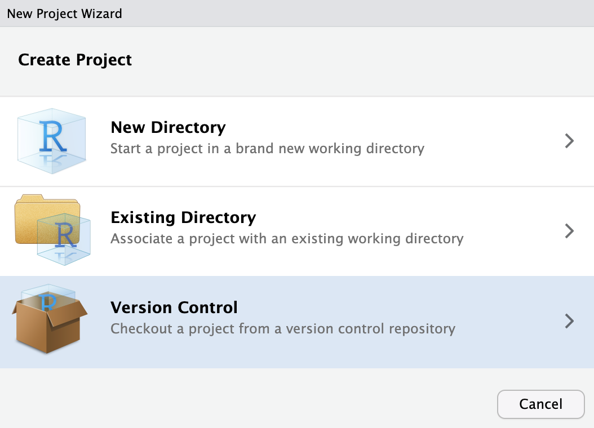
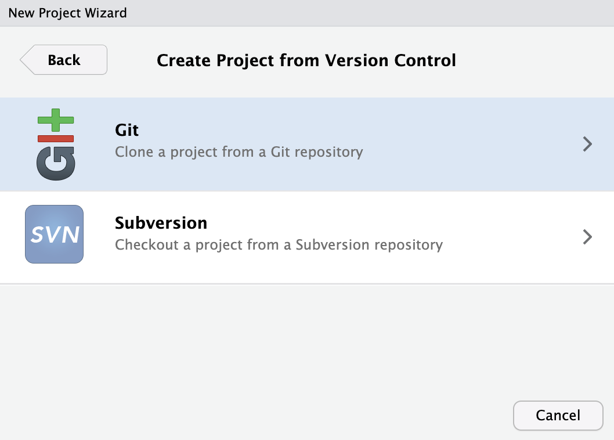

# For writing blog posts
install.packages("rmarkdown")
install.packages("knitr")
# For help setting up Git
install.packages("usethis")
install.packages("gitcreds")First time setup
To work on the blog, you’ll need the following:
- R
- RStudio
- Git
- A few particular R packages
If you’re working on your own machine, follow the instructions below to get this software installed.
The MPC also hosts a server instance of R and RStudio, which you can access using your UMN login credentials. If you prefer to work on the server, then R, RStudio, and Git will already be installed. However, you will still need to install the indicated R packages and configure your Git setup (if you haven’t done so before), so we still suggest reading through these instructions.
Set up R and RStudio
Install R
To install R, visit the Comprehensive R Archive Network (CRAN) and choose the appropriate download link for your operating system.
Install RStudio
RStudio is an interactive development environment (IDE) for R that provides an interface and code editing tools that make it much, much easier to write and edit R code.
The DHS Research Hub is organized as an RStudio Project, which requires RStudio. You can download RStudio here.
Install required R packages
When you’ve got RStudio set up, install these R packages by running the following in the RStudio console:
Tip
If you have trouble installing any of these packages, try to install them in a fresh RStudio session (in the RStudio toolbar, select ).
Configure Git and access blog materials
Initialize your UMN GitHub account
The DHS Research Hub blog materials exist in both a public and private format. When you’re working on the blog, you’ll be working on the private site, which is hosted on the UMN Enterprise GitHub server at https://github.umn.edu/mpc/dhs-research-hub.
The UMN GitHub server is accessible only to people affiliated with UMN. By working in this environment, we can develop and edit new posts without having to worry about them becoming visible on the public site prematurely. Also, it allows us to store files necessary for certain posts (e.g., IPUMS data files) without making those files publicly visible. Members of the blog “admin” team will be responsible for migrating completed posts to the public version of the site.
Since you’re affiliated with UMN, you automatically have access to an account on UMN GitHub. To initialize an account, visit https://github.umn.edu and log in with your University Internet ID and password.
Install Git
To interact with GitHub, you’ll need to install Git on your local machine. Git is the version control software that allows us to track the blog’s history and manage line-by-line changes to files as we edit new posts.
MacOS
MacOS comes with Git already installed. To confirm, you can check its location by running the following in the Mac Terminal or the Terminal in the R Studio window (typically in the tab next to the Console tab).
Terminal
which gitYou can also check the version you have installed by running
Terminal
git --versionIf for some reason Git is not installed, use the Install Git using Homebrew instructions to install it.
Other OS
Users of other operating systems should download the appropriate git for their operating system.
Link RStudio and Git
Next, we’ll link RStudio and Git. This adds a new tab to your RStudio interface where you can see your files being tracked by Git in a convenient point-and-click format.
In the RStudio toolbar, select and locate the tab. Ensure that the box shown below is checked, and then enter the location of the executable file. To find the git executable
-
on MacOS: run
which gitin Terminal -
on Windows: look for
git.exein your file explorer (most likely in )

Configure Git with your UMN GitHub credentials
Finally, we’ll provide Git with the username and email associated with our UMN GitHub account. We’ll also need to generate a Personal Access Token (PAT) for our account. The PAT functions like a password that allows you to interact with your UMN GitHub account from R and the command line.
First, set the username and email address associated with your UMN GitHub account. Git commands need to be run in the RStudio Terminal.
Important
Note that the RStudio Terminal is not the same thing as the RStudio Console, which executes R code alone!
You can find the RStudio Terminal by clicking on the Terminal tab next to the Console tab.
In the RStudio Terminal, I’d run:
Terminal
git config --global user.name "Finn Roberts"
git config --global user.email robe2037@umn.edu
Note
You don’t necessarily need to store your credentials to use Git, but if you don’t, you’ll have to enter them in a popup window each time you interact with GitHub from R or the command line.
Create a Personal Access Token
Next, create a Personal Access Token (PAT) for your account. This functions like a password.
Run the following in your RStudio console to launch a webpage where you can configure a new PAT:
usethis::create_github_token(host = "https://github.umn.edu")You can leave the default boxes checked and click the green button. This should display a long string of digits—this is your new PAT. Don’t close this page yet! Return to your RStudio console and run:
gitcreds::gitcreds_set("https://github.umn.edu")This will prompt you to enter a new token. Follow the instructions to copy and paste the PAT you just generated in your browser and press Enter. From now on, RStudio and Git will be able to access your UMN GitHub account automatically.
Note
If you have a personal GitHub account at https://github.com you could repeat this process substituting "https://github.com" for "https://github.umn.edu", and Git will automatically choose the right credentials based on the repository associated with your project.
Clone the DHS Research Hub Repository
Now that we have Git configured, we can download (or clone) a copy of the blog materials from UMN GitHub.
Open RStudio and navigate to , then select :

Choose to clone the project from a GitHub repository:

On the next menu page, enter the address for the UMN GitHub repository: https://github.umn.edu/mpc/dhs-research-hub/
Hit the tab key and the project directory name should populate automatically. If not, enter dhs-research-hub as the directory name:
Warning
Make sure to clone the private version of the repository (the one located at github.umn.edu), not the public version (located at github.com).
In the third field, choose the location where you would like to store the blog materials on your computer. This can be anywhere that makes sense with your personal file organization approach.
When choosing a place to save this project, do not save to a network drive. This seems to cause RStudio to crash!
Finally, click . After a short bit, RStudio will relaunch and open the new project. If you adjust the windows to show the (left) and (right) tabs, you should see something like this:
You have now downloaded a copy of the DHS Research Hub blog to your computer!
Moreover, because you’ve connected these files to a GitHub repository, the RStudio Project will now keep track of changes you make to the files in this folder, and it will prompt you to upload your changes back to GitHub: as you add, edit, or delete files, a list of changes will appear in the Git tab.
Editing a post
Locate and edit the new post
At this point, the Git tab should show that you’re working on the author’s branch, and you’ll see their post listed in the posts folder in the Files tab. Navigate to the index.qmd file for their post and open it to begin making edits.
You can edit using RMarkdown just as you would as an author. Remember that you can preview the post by clicking the button at the top of the file.
Push the edited post back to GitHub
When you’re finished editing, render the entire site by running the following in the RStudio Terminal:
Terminal
quarto render(This may also generate other ancillary files used on the site, which you’ll see in the Git tab.)
You can preview the site by running
Terminal
quarto previewMake sure that everything on the site looks how you expect.
Now, make a commit recording your edits (again, adjust the commit message as appropriate).
Terminal
git add .
git commit -m "Draft edited: blog-post-workflow" # Adjust this message!And push to GitHub:
Terminal
git pushNow, if you visit our UMN GitHub repository, you’ll see that your edited files appear on the author’s branch.
Publishing a post (admin only)
The following instructions demonstrate how to add an additional remote to your local dhs-research-hub repository. You only need to follow these instructions if you are involved in managing updates to the live blog. All of these commands can be run in the RStudio Terminal.
Rename UMN GitHub remote
In this step, we will link a new remote (referencing the public version of the site on github.com) to our GitHub repository. You only need to do this step once.
Before adding a second remote, it’s best to rename the UMN GitHub remote to disambiguate it from the new one that we will be adding. You can check the current name with:
Terminal
git remoteBy default, the remote will be called origin. We suggest renaming it to private:
Terminal
git remote rename origin privateSimilarly, you should also give the private/main branch a new name, as the public repository will also contain a main branch.
To see all of the remote branches currently in use:
Terminal
git remote show privateCheckout main and change its name. We suggest private-main:
Terminal
git checkout main
git branch -m "private-main"Now, add the public remote and fetch its branches (there should only be one, called main):
Terminal
git remote add public https://github.com/ipums/dhs-research-hub
git fetch publicCreate a local branch called public-main set to track with main on the public remote:
Terminal
git branch public-main public/mainAt this point, you’ll notice that RStudio shows two remotes (with the branches you’ve fetched) and all of the local branches you’ve created so far.

Create a Git Hook to remove data from the public repo
We should never push IPUMS data extracts to the public repository, but we need to have these data available on the private repository in order to build each others’ posts when we want to review or merge new content.
Recall that all data used in a post should be stored in the data directory. Fortunately, we don’t have to manually delete every data directory before merging to the public remote. Instead, we can use git hooks to automate the process of deleting these files every time a post is merged to the public remote.
To do so, create a file called post-merge containing the following code, and put it in the .git/hooks/ directory:
.git/hooks/post-merge
#! /bin/sh
green='\033[0;32m'
nc='\033[0m'
# Start from the repository root.
cd ./$(git rev-parse --show-cdup)
# Delete data files and empty directories.
if [ `git rev-parse --abbrev-ref HEAD` == "public-main" ]; then
echo "${green}Deleting data files...${nc}"
find . -path '*/data/*' -delete
find . -type d -empty -delete
fi
Note
This will only delete data folders if a branch called public-main is currently checked out when we run git merge (see below). If you gave a different name to your local public branch, you’ll have to edit this code.
You also must make this file executable. For MacOS users, you can do this by entering the following command into Terminal (assuming you’re already in the dhs-research-hub directory):
Terminal
chmod +x .git/hooks/post-mergeNow, when you follow the merging steps below, any file saved in a directory called data (including all sub-directories) will be deleted automatically.
Again, this step only needs to be done once.
Merge a new post
To merge a new post, we first need to merge the content from the author’s branch to the main branch of the private repository. Then, we need to merge the main branch of the private repository to the main branch of the public repository.
We follow a “squash and merge” workflow to help avoid creating divergent commit histories between the private and public repositories:
- Open a Pull Request from the new post branch to
private/main - Squash and merge the new post branch into
private/main - Merge
private/maintopublic/main - Push to
public/main
1. Open a Pull Request
A Pull Request is a formalized way of merging one Git branch into another. To open a Pull Request, go to the internal blog GitHub repository, click .
In the compare dropdown menu, find the branch for the new post that you wish to merge. Make sure that the base dropdown shows the main branch selected. Then click . You can add a brief description of the new post that will be added when things are merged in.
If you want further review at this point, you can set the internal blog site to render from your new branch. By default, the internal site is rendered from the files on main. You can adjust this temporarily by navigating to . Under “Branch” you should see an option to change the branch that the site is rendered from.
You can click the branch dropdown to render the site from your new branch (keep the /docs dropdown the same):
After a minute, the internal site should reflect the changes included on your development branch. You or someone else can then review things one final time before merging. When you’re satisfied, change the render branch back to main before proceeding.
2. Squash and merge
Our authoring/editing workflow generates a commit each time someone adds a change to the branch for a new post. We will squash and merge this commit history into a single commit on private/main.
To squash and merge, select the dropdown under merge strategy and select . Then click the green button to complete the merge.
Now that the post is merged, return to RStudio Terminal and run
Terminal
git checkout private-main
git pullto get the latest version of the main branch, which now includes the latest post.
For good measure, we can render the full site by running:
Terminal
quarto renderThis really shouldn’t make any changes, since we’ve already rendered everything on the development branch before merging. But it may be worth double-checking the git diff to make sure that there aren’t any unexpected file changes that resulted from adding the new post. We won’t be making edits directly to the public repository, so this is the time to make any final changes.
Tip
Reviewing Git changes is more easily done in a Git client interface. Unfortunately, not all Git clients are freely available for GitHub Enterprise repositories, but GitHub Desktop is one option that we find helpful.
If you need to make any final edits, you can make the changes, render the site
Terminal
quarto renderand commit your changes:
Terminal
git add .
git commit -m "revisions: blog-post-workflow"Although your local branch has a different name than the branch on the remote, you can still push your commit to the remote main with the following command:
Terminal
git push private HEAD:main3. Merge to the public repository
When the main branch of the internal site is finalized, you can merge private-main to public-main:
Terminal
git checkout public-main
git merge --squash --allow-unrelated-histories private-main -X theirs
Note
--squash once again squashes all changes in the private repository into a single commit. This means that all changes since the last merge to the public repository will be reflected in this commit. You may want to update your commit message to reflect this fact (e.g., if you are merging multiple posts at once).
--allow-unrelated-histories allows the merge even though the public and private repositories do not share a baseline history. This isn’t a concern here—we don’t want the public version of the site to reflect all our small changes when working on posts.
-X theirs indicates that we want to defer to the changes on private-main over those on public-main in the event that there are any conflicts.
Now stage the changes:
Terminal
git add .At this point, review the files that will be included in the merge commit. You should not see any data folders, as they should be deleted automatically (if not, delete them now).
When you’re ready to commit the merge, run the following (with a relevant commit message):
Terminal
git commit -m "new post: blog-post-workflow"4. Publish the new post
Finally, push the new post to the main branch of the public repository:
Terminal
git push public HEAD:mainThe new post has now gone live!